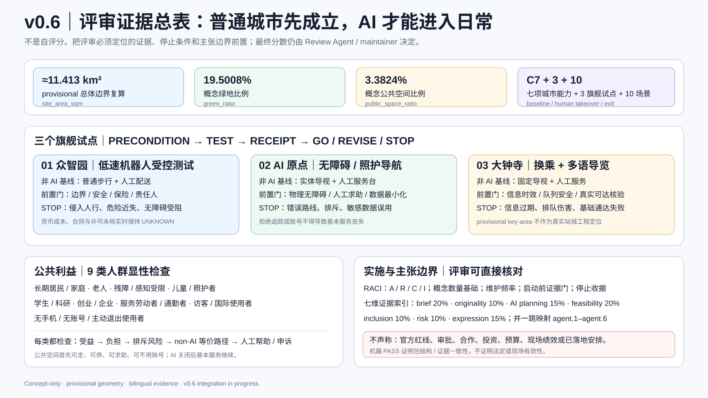
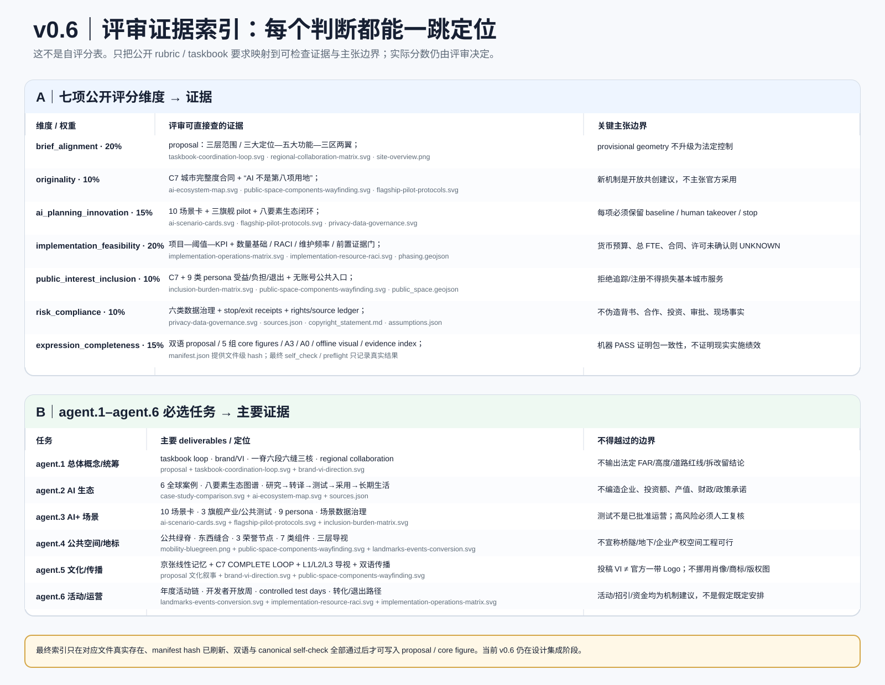

v0.6 首屏评审证据

总览地图
* 大钟寺 provisional key-area 的绝对位置存在已知精度风险，本图只表达任务角色。
三层范围
43.6 km² 统筹研究
产业、人才、高校、企业与未来城市机制研究；不把研究范围画成法定控制线。
11.4 km² 总体设计
以京张遗址公园和成熟城区为共同底座，组织 C7 能力补缺与更新。
368.4 ha 重点详细设计
众智园 192.1 ha、AI 原点 104.3 ha、大钟寺 72.0 ha；当前 polygon 仅为 provisional。
C7 城市完整度
长期住宅与家庭生活
学校、托育、终身学习
照护、健康与人工服务
步行、骑行、无障碍、接驳
绿地、遮阴、雨洪与停留
科研、中试、办公与服务就业
文化、餐饮、社区客厅与公共首层
重点区域
众智园 · 完整创新校园
研发、中试、孵化与日常服务、绿地、公共交流和受控测试同步组织。
AI 原点 · 完整长期社区
住宅、教育、照护、共享工作、普通商业、绿地与公共客厅并列。爽粉堡垒社区只是地名彩蛋。
大钟寺 · 完整站城生活区
普通商业、公共文化、人工公共服务和交通接驳优先于科技展示。
用地分区
13 个概念 LAND_USE features 将住宅、社区服务、教育、科研、文化、商业与公共绿脊组织成六段双侧织补。所有代码是设计表达，不代表获批用地性质。
长期社区
照护与公共服务
研发与共学
京张公共绿脊
交通慢行
一条南北公共绿脊与六条东西向缝合联系构成优先步行、骑行和无障碍的概念网络；道路中心线是连接意图，不是工程线位或道路红线。
蓝绿公共空间
公共空间先提供静态导视、人工入口、遮阴、绿地与无需账户的基本使用，再叠加可选 AI 服务。六个 civic commons 对应日常公共生活，而不是打卡装置。
建筑
13 个 BUILDING features 是容量/邻接原型，用于检查住宅、社区服务、科研、商业和公共首层的关系；不是现状测绘建筑，也不输出法定高度、容积率或逐栋拆改留结论。
更新项目
近期 · 补缺与走查
居民走查、无障碍缺口、共享空间、公共导视和可逆试点。
中期 · 重点区织补
在法定条件核实后推进公共空间、社区服务和可转换空间。
远期 · 网络化运营
把有效试点纳入长期公共服务和开放开发者机制；无效场景可退出。
AI 场景
保留普通步行、人工配送。
保留公开目录、人工预约。
IP 与投资结论由人负责。
物理无障碍先存在。
自愿参加，可随时退出。
保留线下表与人工值守。
保留实体标牌和人工讲解。
不替代真实可达路径。
保留普通支付和人工购买。
AI 只提示，人可复核。
核心指标
任务覆盖
| 任务 | 主要证据 |
|---|---|
| 总体概念与功能统筹 | C7 + 一脊六段六缝三核 + 三大定位/五大功能/三区两翼 |
| AI 创新生态 | 6 个国际机制案例 + 八要素生态图谱 + 3 个旗舰测试协议 |
| 场景与人群 | 10 个 AI 场景 + 9 类 personas + 受益/负担/退出矩阵 |
| 公共空间与商业 | 6 个 civic commons + 3 个公共节点 + 7 类组件 + 三层导视 |
| 实施与运营 | RACI + 数量基础 + 维护频率 + 启动证据门 + GO/REVISE/STOP 收据 |
| 评审可追溯 | 七维 rubric + agent.1–agent.6 reviewer evidence index |
自检状态
来源
- 项目 brief / taskbook / allowed design space / planning limits
- 仓库 provisional boundaries，仅用于概念生成与自检
- Vector Institute、Mila、Alan Turing Institute、AI Singapore、Seoul AI Hub、Punggol Digital District 官方公开资料
- 所有可引用条目以 `sources.json` 为机器可读登记表
假设
离线静态页面；不加载远程脚本、地图、字体、iframe、表单或媒体。
v0.5 任务书深化证据
任务书协同闭环

全球 AI 案例对照

AI 全要素生态

10 张 AI+ 场景卡

区域协同验证

实施与长期运营

数据流与隐私治理

品牌 / VI 方向

公共空间组件与导视

公共荣誉地标与活动转化

v0.6 新增专业证据
旗舰试点协议

包容性与负担矩阵

实施资源与 RACI

评审证据索引
